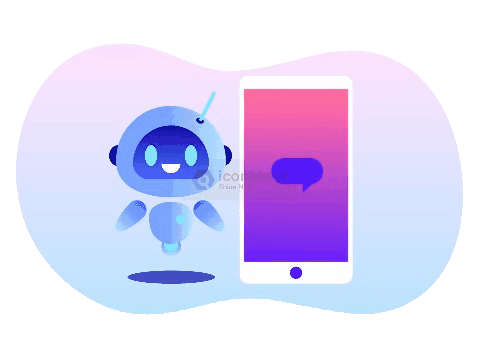
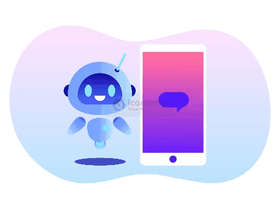

Smart QueryBot
About Smart QueryBot
Smart QueryBot is an AI-powered tool that helps users convert natural language into SQL queries. No need to write SQL manually—just describe your query, and the bot will generate optimized and efficient SQL code instantly.
 

AI-Powered
Convert natural language to SQL instantly.
Optimized Queries
Get efficient SQL queries automatically.
Smart Suggestions
Get AI-powered recommendations.
Secure Execution
Ensures safe query execution.
Cross-DB Support
Works with multiple databases.
User-Friendly
Easy-to-use with intuitive UI.